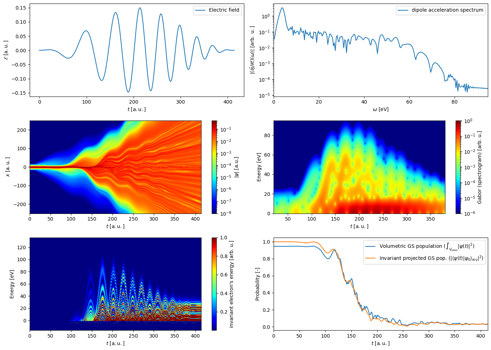

Examples#
This page collects practical examples and typical workflows for MMA. The examples below are based on the tutorials published in jupyter_examples.
Currently included examples:
Full pipeline — based on User-specified density profile
Adaptation for a tailored application — based on Simplified HHG modeling by masking the laser profiles
Microscopic study: usage of TDSE solver as Pythonic library — based on Interactive TDSE
Full pipeline
This example is based on the tutorial User-specified density profile. It demonstrates the three main steps of the computational pipeline: first the laser-pulse propagation, then the calculation of the TDSE at all points of the macroscopic medium, and finally the build-up of the XUV radiation across the whole medium.
Pulse propagation in Argon at peak pressure 50 mbar, entrance intensity \(3.6 \times 10^{14}\,\mathrm{W/cm^2}\), and \(\lambda = 800\,\mathrm{nm}\). The intensity in the figure is expressed in terms of the harmonic cut-off energy, using \(E = I_p + 3.17\,U_p\).
Microscopic harmonic spectra at selected macroscopic points.
Build-up of the HHG signal across the whole medium.
Adaptation for a tailored application
This example is based on the tutorial Simplified HHG modeling by masking the laser profiles and is connected to this paper and its supplementary material. In addition to the standard workflow, it introduces a simplified procedure to retrieve coherence lengths, i.e. the size of the domain of constructive interference for a given harmonic order, in order to optimise HHG in pre-ionised media.
The procedure is based on the strong-field approximation and provides phase diagnostics of the generated harmonic field directly from the laser-intensity and plasma profiles, without the need to compute the TDSE throughout the medium. This substantially reduces the computational cost while retaining the key information needed for optimisation studies.
Microscopic study: usage of TDSE solver as Pythonic library
This example refers to the tutorial Interactive TDSE. It is computed using the Python interface and a customised driving field shown in the first panel. The figure then presents diagnostics directly available in the library: the harmonic spectrum, the Gabor transform, the wavefunction, the time-resolved energetic distribution of the photoelectron, and finally the probability of ionisation.
{kind=link}

Diagnostics from the Python TDSE interface for a customised driving field.#